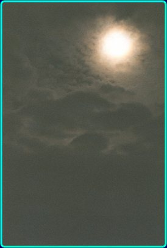
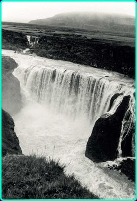
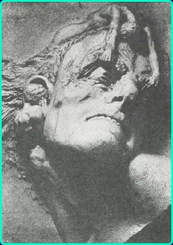

ANGST I EN HÅNDFULD STØV Jeg har altid beundret menneskene. Hvor jeg end bevæger mig rundt i indland og udland, falder jeg konstant i grænseløs beundring for det livsmod, jeg er vidne til overalt.
Det kan f.eks. være over et gammelt menneske på vej ud til det daglige indkøb med sin rollator i et snegletempo nødvendiggjort af kroppens skrøbelighed.
Eller det kan være en krøbling med deforme ben, som slæber sig af sted på sine krykker og smiler til verden undervejs. Det kan være en cancerpatient, som sidder og slikker solskin på en bænk uden for onkologisk afdeling. Eller det kan være et ganske almindeligt menneske, som med et målrettet blik går forbi på fortovet- alle er det mennesker, som i stort og småt giver udtryk for, at de har et formål med livet og en retning at gå efter.
Jeg sidder ofte som tilskuer og undrer mig. Hvad er der at jage efter ? Hvorfor tillægges alle disse formål betydning i et liv, der er skabt med en begrænset holdbarhed. Vi bliver alligevel til støv en dag- uanset vores anstrengelser vil dette liv være glemt om kort tid.
Mit liv mangler retning-jeg har uendelig svært ved at finde ud af at engagere mig i livet. Bliver let tilskueren til de andres liv. Jeg mangler måske evnen til at hengive mig. Glimtvis har jeg erfaret, at det er muligt at vinde sig selv ved at miste sig selv- men af frygt for at miste fodfæstet har jeg hurtigt indtaget tilskuerens sikre position igen. Jeg elsker at se på aber både i zoologisk have og på National Geographics tv-kanal. Synet af aber og deres adfærd giver mig en klar fornemmelse af, hvorfra vi kommer. Jeg er ikke det mindste i tvivl-ofte synes jeg blot, at aber opfører sig mere civiliseret end mennesker. Men indholdet i menneskers og abers liv er næsten det samme, nemlig mad, sex og territorieafgrænsning inden for stammen og i forholdet til andre stammer. De dominerende hanner på den nationale og internationale scene, der slår sig for brystet og krydser klinger med nabostammernes dominerende hanner. Symbolsk kan denne rivalisering udkæmpe sig i sportskampe, hvad enten det er VM i fodbold, Tour de France eller De Olympiske Lege. Misundelse ser ud til at have været drivkraften i evolutionen, hvor den med de største fordele overlevede, og sådan er det jo stadig. Netop på grund af denne dyriske baggrund beundrer jeg mennesket endnu mere-netop i dets søgen efter mening og fylde ser jeg, at mennesket er noget mere end et dyr

Fra min barndom husker jeg stadig en begivenhed, som viste mig muligheden og umuligheden i et split-sekund. Jeg har vel været omkring 10 år gammel, da jeg en dag sad i et gammelt æbletræ i haven en aften med fuldmåne. Jeg sad og så mod Månen og kneb øjnene sammen, så jeg kunne se Månens stråler som et bundt af gyldne tråde. Jeg var så fortryllet af synet, at jeg pludselig blev grebet af ønsket om at kunne følge strålerne til Månen. Jeg vedblev at stirre på strålebundet med sammenknebne øjne og gjorde min bevidsthed diffus og klar til at stige op- og pludselig var jeg på vej, med lysets hast steg jeg højt op over Jordens atmosfære, medens jeg så Jorden blive forvandlet til en kugle under mig. Jeg blev så forskrækket, at jeg styrtede ud af det tomme rum og ned på den hårde jord under æbletræet.
Jeg var dybt rystet i min grundvold- jeg havde vitterlig følt, at jeg var på vej mod himlen i en vægtløs krop, der red på ønskets mulighed i en verden, hvor alle ville bedømme det, som var sket, for umuligt.
Himmelflugten og faldet fra æbletræet blev bevaret som en dyb hemmelighed. Da jeg senere gik ind i huset til familien, var jeg lettet over hverdagens banalitet, men havde også erkendt nogle sider af mit sind, som både fascinerede og skræmte mig. Det var absolut noget, jeg måtte prøve igen.

Som ung mand tog jeg til Island for at opleve dette fantastiske land. Se www.oplevisland.dk eller (discover Iceland). Jeg drog ind i højlandet til en fascinerende fos med et mægtigt fald, som jeg ville udforske nærmere ved at tilbringe en hel nat alene med fossen. Jeg så i fossen en læremester, som måske kunne lære mig hengivelsens svære kunst. Den kunne noget, som jeg ikke kunne. Den kunne styrte sig hovedkuls ud over kanten af faldet og nyde det rolige fald med udsigt til infernoet lige under. Jeg sad på kanten af vandfaldet og fulgte et bestemt punkt i vandmasserne fra lige før det styrtede i dybet- stilheden i selve faldet- hvorefter jeg blev svimmel i mødet med vandinfernoet, hvor jeg blev hvirvlet rundt uden at kunne finde fodfæste. Fossens dæmon
Som natten skred frem, vågnede angsten i mig- det, der var startet som en voldsom fascination, blev forvandlet til et inferno af angst. Dæmonerne lurede i stemmerne fra Fossen. Min læremester blev en tugtemester, og jeg fortrød bitterligt min udflugt og fandt et sted at rulle soveposen ud på det hårde grus i behørig afstand fra faldet. Jeg rullede mig sammen i fosterstilling, medens faldets mulighed var blevet til umulighed. Jeg følte mig som en håndfuld støv, der kun opretholdt livet på grund af et heldigt tilfælde. Jeg lå midt inde i den nyvulkanske zone, lige der hvor Island af og til sprækker op. Når som helst kunne jorden åbne sig under mig, og jeg ville styrte i døden. Der var ingen Gud den nat. Jeg følte mig helt alene i et koldt univers, hvor liv og død kun var bestemt af naturkræfter og tilfældets luner. Livet selv oplevede jeg som et heldigt eller uheldigt biprodukt af stjernedannelsesprocessen. Da vi er blevet til i et univers med evighedens tidsperspektiv og materiens endelighed, har vi begge aspekter i os. Vores oplevelse af Gud og evigheden kan forklares som genernes ”erindring” om arternes liv gennem 500 millioner år og atomernes erindring om Big Bang for 14 milliarder år siden- dengang Universet var samlet i eet punkt. Stjerner fødes, stjerner dør. Mennesker fødes, mennesker dør. Mennesket har selv skabt deres gudsbilleder fordi ingen kan udholde perspektivet- fra støv til støv. Vi har brug for evighed og mening, men den må vi selv skabe i et meningsløst univers.
Næste morgen tidligt skrev jeg et lille digt.
Fossen hvæsser sine knive
ved min hjerterod.
Hjejlen klager stille
mangler livets mod.
Beskæmmet vandrede jeg bort. Fossen havde besejret mig, og jeg havde ikke afluret den dens hemmelighed. Jeg følte mig lettet da bussen dukkede op, og jeg blev lukket ind i en kendt og tryg verden. Næste år prøvede jeg igen-denne gang overnattede jeg på fjeldet på Nordvestisland ved en mindre bjergelv, som rislede saligt. Jeg var kommet med båden fra Isafjördur og sejlet helt ind i bunden af Isafjardardjup. Jeg skulle så vandre over fjeldet Steingrimsfjardarheidi, hvor jeg blev nødt til at overnatte under åben himmel, da ingen biler kom forbi den dag. Sent på aftenen havde jeg rullet min sovepose ud i nærheden af fjeldbækken og satte mig nu ned til bækken for at slappe af og lytte til dens rislen. Medens jeg sad ved bækken, faldt jeg i en spontan meditation og blev helt tanketom. Jeg følte pludselig, at jeg blev til et træ, der havde slået rod her ved fjeldbækken. Tiden forsvandt og jeg blev eet med bækkens lyde og følte styrken ved at stå her med rødderne dybt nede i klippegrunden og kronen vendt mod himlens lys. Jeg tror, at jeg sad der en time eller to, hvor alle tanker var væk fra mit sind-og da jeg rejste mig igen var al træthed blæst væk, og med fornyede, vågne sanser oplevede jeg en ethed med naturen- oplevede et ”gudsnærvær”, der fik mig til at se de intense farver, som midnatsolens sidste stråler kastede på landskabet. Jeg følte mig omsluttet af Altet, og jeg fik del i en ubeskrivelig fred. Liv og død var en helhed, og tiden var gået i stå i et saligt, evigt øjeblik. Da jeg blev 37 år gammel, blev jeg ramt af angst og depression- en såkaldt midtlivskrise. Fossens dæmoner vågnede igen:
Angst i en håndfuld støv
af Morten Stender
Jeg vågnede i nat
våd af sved.
I det fjerne hørte jeg
gennem en susen
mit hjerte dunke.
Mørket krøb ind på mig
og morgendagen forsvandt af syne
Kun et stod tilbage-
angsten for angsten i mørket. Hvad skal man stille op
med et menneske,
der ikke kan være i sig selv?
Med et menneske
der er bange for livet
og angst for døden?
Med et menneske
der ræddes
ved hjertets dunk
og blodets susen,
uglens skrig i natten,
tågen,
der kryber op omkring huset,
stormen, stilheden
kulden, varmen
LIVET SELV??
Trolden i brønden
af Morten Stender
Fra bunden af en dyb brønd
ser jeg livets lys,
cirkelformet-højt over mig
udenfor rækkevidde.
Jeg sidder fast i mudder
og ser mig angstfyldt omkring.
Når jeg strækker mig mod lyset
suges jeg dybere-
ned i mudderet,
og når øjnene forsøger at kravle op
ad de glatte brøndvægge,
synker de ind i øjenhulerne,
hvor afmagtens skrig
løfter sig rungende
til en bøn
om nåde og barmhjertighed. Mit skrig når omverdenen
og i de øjne,
der stirrer ned i brønden,
ser jeg min egen angst genspejlet.
Folk skynder sig bort,
de så deres eget spejlbillede-
hæsligt forvrænget.
En sten bliver kastet,
og spejlbilledet forsvinder,
men trolden i brønden
skriger af smerte
og strækker sine arme mod lyset,
medens han synker
dybere og dybere.
Det blev værre endnu. Jeg havde fået en depression med en voldsom angst, som invaliderede mig totalt. Jeg blev indlagt på et nervesanatorium for at få ro og fred og oplevede der, efter en uges indlæggelse, at en af patienterne gik ud på sanatoriet parkeringsplads og overhældte sig med benzin og strøg en tændstik.
 Af Einar Jonsson
Næste dag skrev jeg i en følelse af at være total forladt af Gud og mennesker:
Hvileløs Hvidhed.
”Et tryk, en hvidhed-en glødende hvidhed i hjernen udvisker mit livs tavle. Kontinuiteten er væk-nu ved jeg, hvad der sker med torturofre-en hvidhed, intet at fortælle, intet at kommunikere, ingen at røre, ingen der vil røre. Urørlighedens zone omkranser mig, mit fængsels mure er tårnhøje, ingen kan trænge ind, de er bange for mit kaos og min stivhed, de er bange for døden i mig. Hvor må Døden føle sig ensom på sin runde for at høste børn og unge. Hvem skal Døden læne sit hoved til, når han bringer død ?
Det tomme værelse, sengen, de hvide vægge, manglen på liv, alderdommens forbandelse. Afhængighed, regler, frygt for at bryde reglerne, for at blive forkastet, dømt uværdig til indespærring. Vi kan heller ikke bruge dig her-du er for gammel, for udslidt, for død-vent med at begå selvmord til du er ude-for selvmord sviner og giver nerver-en sort plet på parkeringspladsen må være nok-et flammende bål efter 5 måneders idenditetsløshed-hvidheden, der brænder livet bort- de ydre flammer, der flår skinnet af, tager smerten fra sjælen, giver lethed, verden brænder, men jeg lever i mit flammebål. En terapeut kommer med en skumslukker, der er tom efter 5 måneders terapi. Næstekærlighed på dåser der er tomme. Terapi er det kapitalistiske samfunds dåselatter, alt kan købes- terapi i stride strømme, man hjælper ikke hinanden, man køber en vare, som skal hjælpe to timer om ugen, resten af tiden i hvileløs vandren på værelset eller udenfor værelset.
Man vil give piller-antidepressive piller, der skal give livsmod og kærlighed. Man tror på pillen. Da terapi ikke hjælper, må der findes en pille, der hjælper. En pille der fjerner hvidheden, fjerner kaos, genopretter kosmos, bringer familien tæt på. Nærheden til TV-aviser og dåselatteren i fjernsynet.
Angsten har visket min lystavle ud- kun en sjælden gang kommer sorgen over mit tabte liv og gråden gennemryster min krop- ellers kan blikket hvile på den hvide væg i timer, stirre ind i tomhedens hvidhed- dødens intethed, forløsningens mulighed- en dag er angsten for at dø mindre end angsten for at leve. Hvidhed på en flimrende skærm et lysbib i monoton dunken fortæller mig, at jeg endnu ser intetheden udefra.”
Tomhed
af Morten Stender
Dryp, dryp
vanddråber falder i vasken
som klemt på tomme tankestrenge
Ingen ønsker eller begær
opfylder mit sind:
kun undren over, at dråbens lyd
mod vaskens bund
er mig—
her og nu Dryp ! dryp !
Du udmåler min tid’
til et jordisk helvede
Dråbe ! Dryp noget hurtigere
for SATAN, Dråbe !
Dryp med melodi.
Din hule klang
vækker skriget i mit bryst.
Dryp, død.
Død, dryp
Salme 69 i GT
Frels mig, Gud,
for vandet når mig til halsen,
jeg er sunket i bundløst dynd
og kan ikke få fodfæste.
Jeg er kommet ud på det dybe vand,
strømmen skyller sammen over mig.
Jeg er udmattet af at råbe,
min strube er blevet hæs,
mine øjne har stirret sig trætte
af at vente på min Gud
Salme 88 i GT
Herre, min frelses Gud,
dag og nat råber jeg til dig;
lad min bøn nå dig,
vend dit øre mod min klage!
For min sjæl er mæt af ulykker,
mit liv er nået til dødsriget,
jeg regnes blandt dem, der er gået i graven,
jeg er blevet som en mand uden kraft.
Blandt de døde er jeg spærret inde,
som de dræbte, der ligger i graven,
dem, du ikke længere husker,
for de er revet ud af din hånd.
Du har kastet mig i den dybe grav,
i det mørke dyb.
Din vrede hviler tungt på mig,
alle dine brændinger lader du skylle over mig.
Mine bekendte har du taget fra mig
og givet dem afsky for mig;
Jeg er spærret inde, jeg kan ikke komme ud.
Mit øje er sløvet af lidelser,
hver dag råber jeg til dig Herre,
og rækker mine hænder op imod dig.
Gør du undere for de døde?
Rejser dødninge sig og takker dig?
Fortæller de i graven om din troskab,
i underverdenen om din trofasthed?
Kender de i mørket til dine undere,
i glemselens land til din retfærdighed? Jeg råber til dig om hjælp, Herre,
hver morgen kommer min bøn til dig.
Hvorfor har du forstødt mig, Herre,
hvorfor skjuler du dit ansigt for mig?
Jeg er hjælpeløs og udmattet fra ungdommen af,
dine rædsler omgiver mig.
Din harme slår ind over mig,
dine grusomheder gør det af med mig;
de omslutter mig altid som vand
de slår sammen over mig.
Ven og frænde har du taget fra mig,
mine bekendte er borte i mørket.
Salme 102 i GT
Herre, hør min bøn
lad mit råb om hjælp nå dig.
Skjul ikke dit ansigt for mig,
når jeg er i nød.
Vend dit øre mod mig,
svar mig i hast, når jeg råber! For mine dage svinder som røg,
og mine knogler brænder som ild;
mit hjerte er som græs, der svides og visner.
Jeg er hørt op med at spise mit brød,
for jeg må sukke dybt,
jeg er kun skind og ben.
Jeg ligner alliken i ørkenen,
jeg er som uglen i ruinerne;
når jeg ligger vågen, er jeg
som en enlig fugl på et tag.
Dagen lang håner mine fjender mig,
de spotter mig og bruger mit navn til forbandelse.
Jeg må spise aske som brød
og blande mit vand med tårer.
Det skyldes din harme og vrede;
du løftede mig op og kastede mig bort.
Mine dage er som skyggen, der hælder,
og jeg må visne som græs. --------------------------------------- hovedside  | |